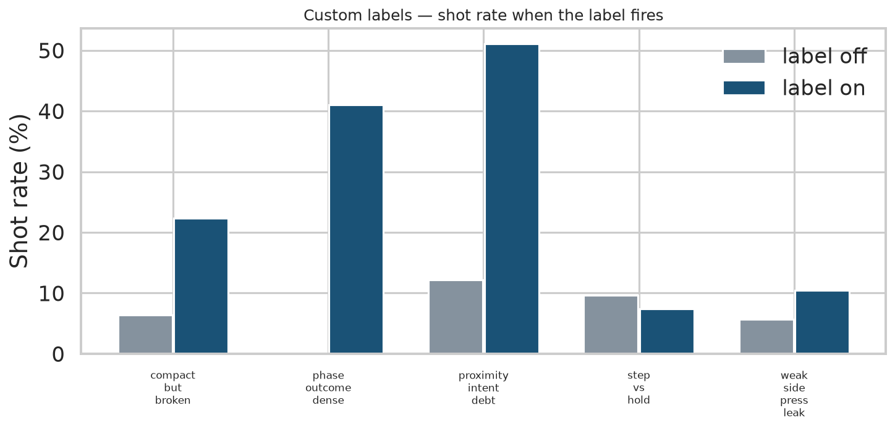
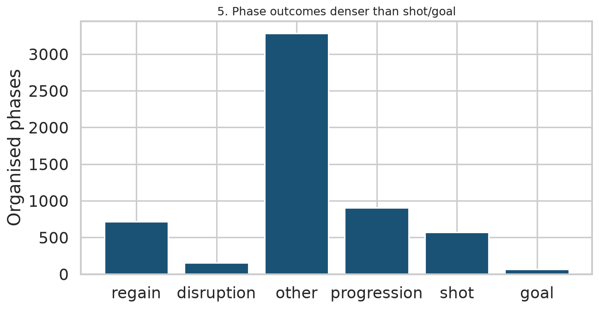
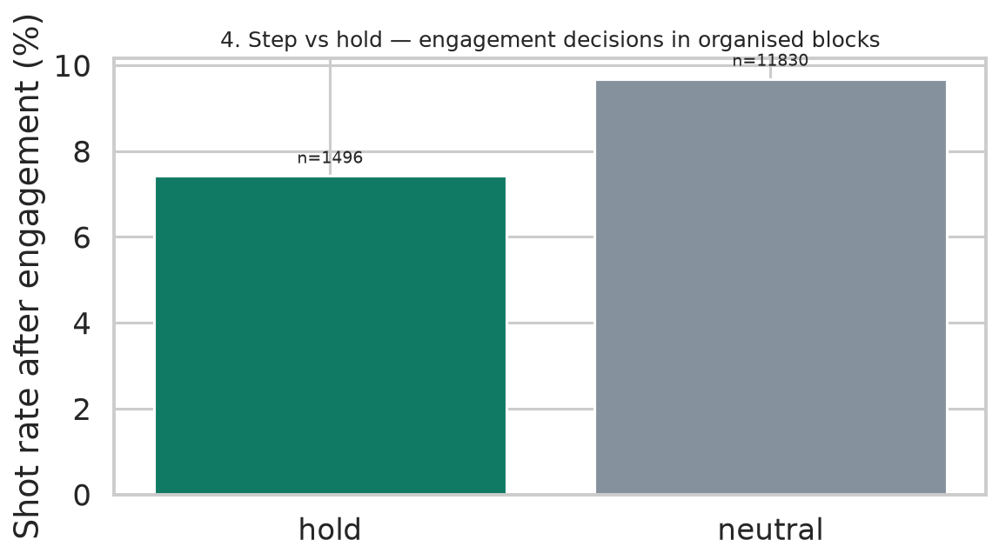
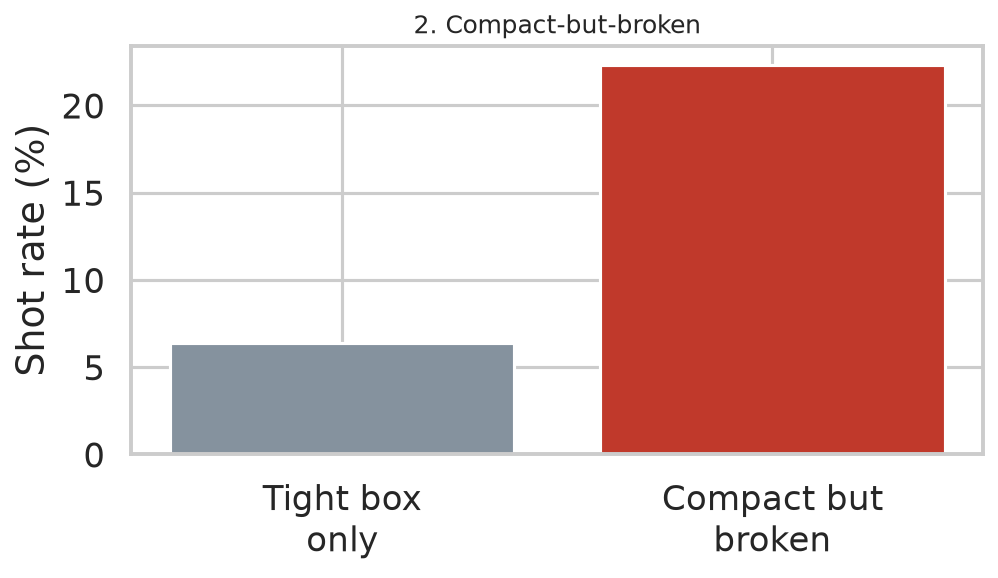
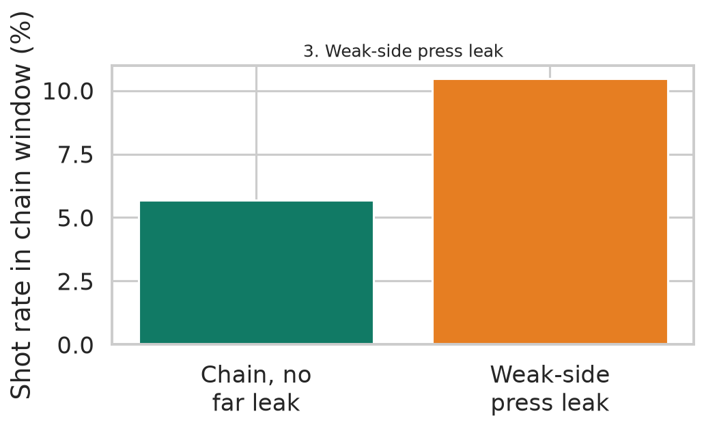

coverage_debt — Danger graph debt_score ≥ 3 (free attackers + far runner + failed chain).compact_but_broken — Bottom-tercile OOP box + (ball inside shape | beaten engagement | ≥2 free attackers at danger).weak_side_press_leak — Pressing chain with far-side off-ball runner and chain end ≠ regain.step_vs_hold — Engagement push/break line (step) vs force-back / reduce-danger (hold) in organised blocks.phase_outcome_dense — Organised phase → regain | disruption | progression | shot | goal | other.proximity_intent_debt — Engagement ≤3 m and beaten_by_movement (pose-free intent proxy).pose_attention — Shoulder facing vs ball / far-side runner; scan lag in frames (pose matches).